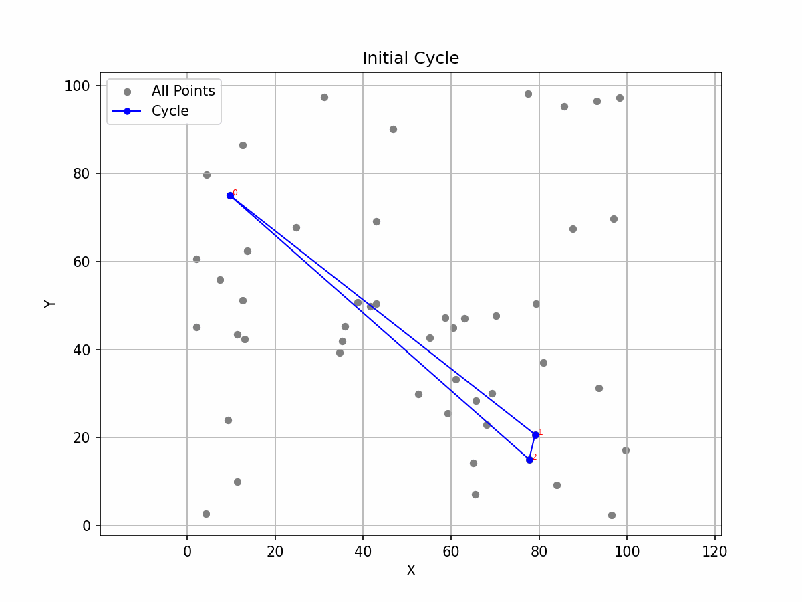
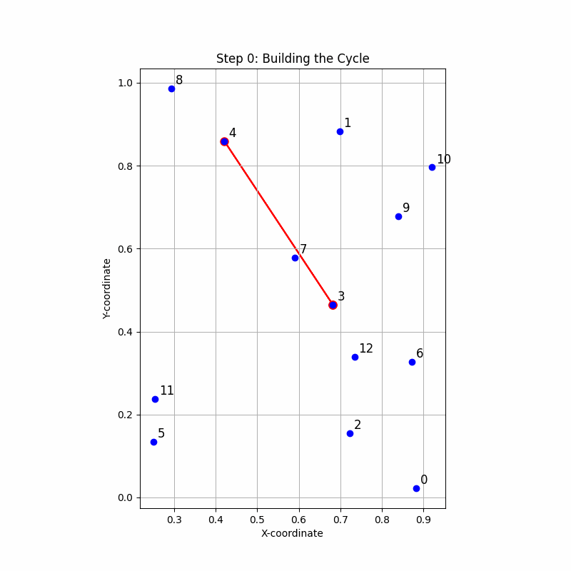
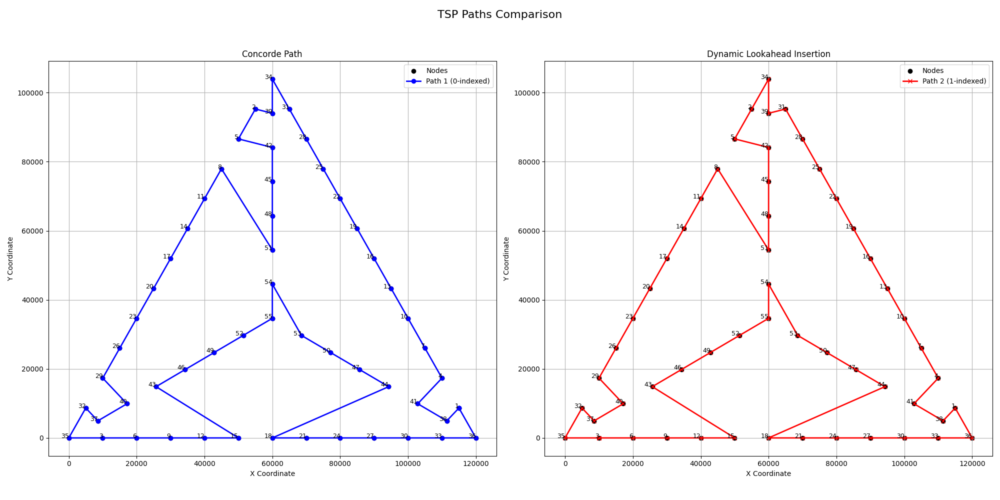

The Traveling Salesman Problem (TSP) has been a central topic in computer science and operations research for decades. Its seemingly simple question—finding the shortest possible route that visits a set of cities and returns to the origin—unfolds into a complex challenge that has significant theoretical and practical implications. In this blog post, I share my journey tackling the TSP, exploring algorithmic strategies, developing heuristics, and potentially uncovering a breakthrough that challenges longstanding computational boundaries.
Understanding the Traveling Salesman Problem
At its essence, the TSP asks:
Given a list of cities and the distances between each pair, what is the shortest possible route that visits each city exactly once and returns to the origin city?
Despite its straightforward formulation, the TSP is NP-hard, meaning that no known algorithm can solve all instances efficiently (i.e., in polynomial time). This complexity makes the TSP a benchmark for studying computational difficulty and optimization techniques.
Why TSP Matters
The TSP isn’t just a theoretical puzzle—it has real-world applications in logistics, manufacturing, DNA sequencing, and even astronomy. Efficiently solving the TSP can lead to significant cost savings and optimization in various industries, making it a problem of both academic and practical importance.
Polynomial vs. Non-Polynomial Runtimes
Understanding the efficiency of algorithms is crucial when approaching the TSP. Algorithms are often classified based on their time complexity, which describes how their running time increases with the size of the input.
Brute Force: The Ultimate Exhaustive Search
The most straightforward method to solve the TSP is the brute-force approach, which involves evaluating every possible permutation of cities to identify the shortest route. This method has a factorial runtime ((O(n!))), making it impractical even for moderately sized datasets. For example, with just 20 cities, there are over 2.4 quintillion possible routes!
Held-Karp Algorithm: A Smarter Dynamic Programming Approach
The Held-Karp algorithm offers a more efficient solution using dynamic programming. It reduces the time complexity to (O(n^2 * 2^n)), which is significantly better than brute force but still exponential. While feasible for smaller datasets, the Held-Karp algorithm becomes impractical as the number of cities grows.
The Elusive Polynomial-Time Algorithm
The holy grail of TSP research is a polynomial-time algorithm—one that can solve the problem efficiently as the number of cities increases. Despite extensive efforts, no such algorithm exists for the general case of the TSP. This remains a pivotal question in computational complexity, particularly in the context of the P vs NP problem.
“This sounded easy, and perhaps it was!”
With a foundation in algorithmic theory, I embarked on developing heuristics—strategies designed to find good-enough solutions more efficiently than exact algorithms.
Embracing Heuristics: The Art of Practical Problem-Solving
When exact solutions are out of reach, heuristics come to the rescue. These are strategies designed to produce sufficiently good solutions swiftly, without guaranteeing optimality. In the context of the TSP, heuristics aim to find a short (though not necessarily the shortest) possible route without exhaustively checking all permutations.
My Heuristic Adventures
In my free time, I immersed myself in developing and experimenting with various heuristics to optimize TSP routes. One such method was the pr + rq - pq Cheapest Insertion Heuristic. This approach typically begins with a simple structure—a triangle formed by three random cities—and iteratively inserts new cities between existing pairs in a way that minimally increases the total distance.
 Gif: Evolution of the heuristic approach over iterations.
However, this method often settled into local optima, resulting in paths that intersected themselves.
Fun Fact: Any TSP path with intersecting routes is suboptimal.
The key to an effective solution lies in balancing local optima (good immediate choices) with global optima (the best overall path).
Breaking Through Local Optima
Determined to overcome the limitations of local optima, I explored enhancements to the heuristic:
The Breakthrough Algorithm: Dynamic Lookahead Insertion
I introduced a Dynamic Lookahead Insertion strategy, which works as follows:
- Simulate Insertions: For each remaining city, simulate inserting it between every edge in the current cycle.
- Estimate Total Distance: For each simulated insertion, estimate the total distance of the complete TSP path if that city were inserted at that position.
- Choose the Best Insertion: Select the insertion that results in the least total distance and update the cycle accordingly.
- Repeat: Continue this process iteratively for all cities and for all edges until the path is complete.
This “lookahead” mechanism allowed the algorithm to anticipate the impact of each insertion, effectively navigating around local optima traps.
Python Implementation
The python implementation is available on Github
Astonishing Results: A Potential Breakthrough
The results were nothing short of remarkable. The Dynamic Lookahead Insertion algorithm consistently outperformed established tools like Google’s OR-Tools. Intrigued by these outcomes, I decided to rigorously test my algorithm against exact solvers using Dynamic Programming and the PuLP Python Library.
I set up a comprehensive testing environment, generating 15,000 random TSP instances and solving them using both my algorithm and the exact solvers. To my amazement, my heuristic matched the exact solutions every single time. Not once, not twice, but 15,000 times.
 Image: A step by step animation of how the Dynamic Lookahead Insertion works
This consistency suggested that my heuristic might transcend its intended purpose and function as an exact algorithm—one that guarantees the optimal solution.
“I found a heuristic that worked pretty well (pr + rq - pq cheapest insertion heuristic). However, this algorithm almost always decided to settle on local optima, and the resulting path often led to intersections in the path.”
Results
This algorithm works exceptionally well and has never faulted even once. In fact, in the set of “Hard to Solve Instances of the Euclidean Traveling Salesman Problem” created by Stefan Hougardy and Xianghui Zhong, this Dynamic Lookahead Insertion algorithm found the optimal solutions each time.
This is rather suspicious. The exceptionally good performance and lack of counterexamples suggest that this might be an Exact Algorithm. Is it?
 Image: Comparison with an Optimal Solution derived by Concorde on the Hard to Solve Instances of the Euclidean Traveling Salesman Problem Dataset
Implications of a Polynomial-Time Exact Algorithm for the Euclidean TSP
If validated, discovering a polynomial-time exact algorithm for the Euclidean TSP would have profound implications:
Revolutionizing Computational Theory: It would challenge the current understanding of the P vs NP problem, potentially showing that some NP-hard problems can be solved in polynomial time under specific conditions.
Transforming Industries: Efficient route optimization is pivotal in logistics, transportation, manufacturing, and more. A breakthrough algorithm could lead to significant cost savings and efficiency improvements across these sectors.
Inspiring Further Research: This discovery would open new avenues in algorithm design and complexity theory, encouraging researchers to explore similar strategies for other complex problems.
Extending Horizons: The TSP Path Variant
Beyond the classic TSP, this algorithm can be adapted to solve the Travelling Salesman Path Problem (TSP Path). Unlike the traditional TSP, where the path forms a cycle, the path variant seeks the shortest route that connects any two cities without necessarily returning to the starting point. This flexibility broadens the algorithm’s applicability, catering to scenarios where a return trip isn’t necessary. The code for this variant is also available on Github
Conclusion: A Journey of Persistence and Innovation
From grappling with the inherent complexities of the TSP to developing and refining innovative heuristics, my journey has been both challenging and exhilarating. The emergence of the Dynamic Lookahead Insertion algorithm not only showcases the potential of creative heuristic methods but also hints at possibilities that could redefine our approach to classic computational problems.
As I continue to validate and explore this algorithm’s capabilities, the hope is that it will contribute significantly to both theoretical and practical advancements in solving one of the most enduring puzzles in computer science.
Feel free to reach out with questions, feedback, or to discuss potential collaborations! Email me at my-github-username at gmail.com.